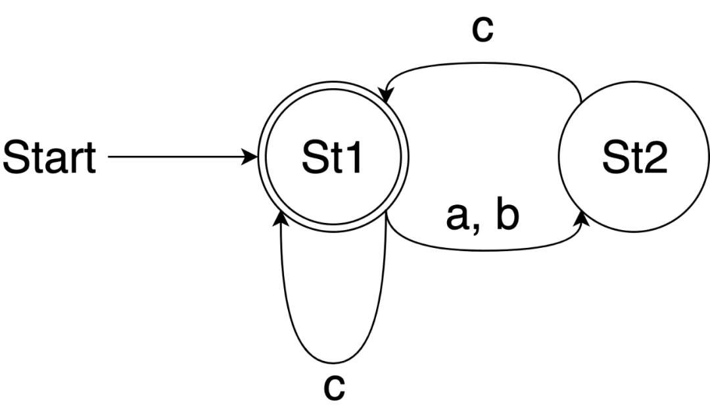

Type Recursion in Golang
注：本文最早是很久以前发布在公司的技术公众号上的，后来在 Go 夜读的第 98 期（）也讲过，现在搬运回我自己的博客。
Go 的类型系统目前虽然不支持泛型，但却支持类型定义时使用非指针的递归，也就是说当定义类型 T 时我们可以直接在定义中使用 T 而不是 *T 。
个人觉得使用上比较相近的是 C++ 中的 std::enable_shared_from_this 。
有了递归类型支持的加持，我们就能够写出更有趣的代码。
例如原本一些我们可能需要定义为 struct 的类型，现在我们使用一些递归的类型来实现，这样就可以借助特定类型的语法糖。
字典树
大家对字典树应该都不陌生，通常会选用一个 struct 来实现，不过这里我们利用递归定义的 map 类型来更方便地来定义 Trie 。
type ( Char = rune Trie map[Char]Trie )
当我们使用这样定义的 Trie 类型时，可以很方便地利用 map 为它带来的 [] 算符来新增节点或者进行查找。
具体实现如下：
func (t Trie) AddString(s string) { for _, ch := range []Char(s) { if t[ch] != nil { t = t[ch] } else { prevT := t t = make(Trie) prevT[ch] = t } } } func dfs(t Trie, prefix []Char, suggestions []string) []string { for ch, newT := range t { prefix := append(prefix, ch) if len(newT) == 0 { suggestions = append(suggestions, string(prefix)) } else { suggestions = dfs(newT, prefix, suggestions) } } return suggestions } func (t Trie) Suggest(prefix string) []string { prefixBytes := []Char(prefix) for _, ch := range prefixBytes { t = t[ch] } return dfs(t, prefixBytes, nil) }
简单测试一下：
func ExampleTrie() { t := make(Trie) for _, s := range []string{ "abandon", "absorb", "academy", "accuse", "accumulate", "banana", } { t.AddString(s) } for _, prefix := range []string{ "ab", // Output: ab: [abandon absorb] "ac", // Output: ac: [academy accuse accumulate] "acc", // Output: acc: [accuse accumulate] } { fmt.Printf("%s: %v\n", prefix, t.Suggest(prefix)) } }
状态机
既然都能够实现字典“树”了，只要我们减少对边的约束，我们就能将“树”改成“图”。
当我们实现正则引擎的时候，通常是要实现 NFA 或者 DFA。 不过这里为了将行文聚焦在主题上，这里略去构造 NFA/DFA 的过程，直接使用其结果——有限自动机来展示。
状态机的状态的定义和字典树的 Trie 只有名字的差别：
type ( Char = rune State map[Char]State )
状态机的实现也要简单很多：状态机的构造并不需要在这里考虑，状态机状态的转移直接靠 map 的 [] 操作即可实现——这也正是我们采用递归类型的 map 相较于通常采用 struct 的优势。
具体实现如下：
const EOS = Char(-1) func NewFinalState() State { return State{ EOS: nil, } } func isFinalState(st State) bool { _, found := st[EOS] return found } func Match(s string, st State) bool { for _, ch := range []Char(s) { st = st[ch] } return isFinalState(st) }
例如对于 ((a|b)?c)* 这个正则表达式，我们可以构建出这样一个有限自动机：

构造这个有限自动机的过程中我们也会体会到因为使用 map 而能够进行 [] 操作所带来的便利。
接下来构造这个有限自动机并简单验证：
func ExampleFiniteAutomata() { St1 := NewFinalState() St2 := make(State) St1['a'] = St2 St1['b'] = St2 St1['c'] = St1 St2['c'] = St1 for _, s := range []string{ "acbc", // Output: true "acbca", // Output: false } { fmt.Println(Match(s, St1)) } }
栈
函数式编程里面有个技巧是用闭包实现栈：通过压栈操作构造新的闭包；直接调用闭包就是获取栈顶或者弹栈操作。
由于调用闭包返回的结果里有一个新的栈，也就是和这个闭包同类型的值，所以需要借助递归类型来定义栈：
type ( T = int Stack func() (T, Stack) )
栈的功能只剩下压栈需要实现：
func Push(stk Stack, x T) Stack { return func() (T, Stack) { return x, stk } }
由于闭包本身可以被多次调用，所以这样构造出来的 Stack 是具有不变性的，比如我们可以多次遍历这个栈：
func IterateStack(stk Stack, visit func(T)) { rest := stk for rest != nil { var x T x, rest = rest() visit(x) } } func ExampleStack() { stk1 := Push(nil, 1) stk2 := Push(stk1, 2) stk3 := Push(stk2, 3) for i := 0; i < 2; i++ { // always print out: 3 2 1 IterateStack(stk3, func(x T) { fmt.Print(x) }) } }
指针
type Pointer *Pointer
这个类型表现出来既有指针的特点又有非指针类型的特点。
接下来看一段简单的代码：
var p *Pointer p = (*Pointer)(&p)
经过第二行赋值之后， &p 、 p 、 *p 、 **p 、 ***p 、…都会变成同一个值。
这段代码的特殊之处在于：我们只有一个指针变量（类型 *Pointer ），也没有进行任何的 new 操作，却成功构造出了一个指向非 nil 有效值的指针。
赋值时需要对 &p 进行类型转换是因为 Go 是强类型系统，只能显式进行类型转换，和通过 unsafe.Pointer 的指针类型强制转换有本质区别。
同样效果但看起来更好理解的写法是这样的：
var p Pointer p = &p
其实正如类型定义写的那样： Pointer 和 *Pointer 其实就是同一个类型，所以 Pointer 才带有了指针的特性而 *Pointer 也才能带有非指针的特性。
值得一提的是这样定义的 Pointer 并不能作为 embedded type，也就是说如下的类型定义目前是无法通过编译的：
type InvalidStructDef struct { Pointer // compile error: embedded type cannot be a pointer }
单看这个错误信息可能具有迷惑性，首先它长得有点像另一个编译错误 embedded type cannot be a pointer to interface，不过其实这并不是同一个错误；另外在实际使用中不要说是像 *http.Client 这样的指针类型，哪怕是 *int 作为 embedded type 也是能通过编译的。
不过这个错误并不是专门针对我们定义的这个 Pointer 的，我们也可以构造出别的同样报出这个错的情形：譬如将 **http.Client 作为 embedded type。
如果深究这个问题，可以考察一下 "cmd/compile/internal/gc" 这个 package 下的 checkembeddedtype() 方法，它会尝试“褪去” embedded type 的一层指针，如果剩下的仍然是指针（ gc.TPTR ）才会报出这个编译错误。
所以实际上 Go 编译器看到这个 Pointer 的时候也是将它认为是指针。
“好括号列”数组
“好括号列”是指：仅由相同数目的左右括号数构成的序列且从前向后遍历时任意一步已遍历的右括号都不多于已遍历的左括号。
我们可以定义这么一个递归类型的 slice ：
type BalancedBraces []BalancedBraces
由于 Go 允许我们略去 slice 内成员的类型，那么我们可以这样定义一个变量：
arr := BalancedBraces{{}, {{}, {}}, {}}
可以发现只要是“好大括号列”，以适当逗号分割后再在外面套一层大括号就都可以作为合法的 BalancedBraces 字面量。
当然，如果使用 fmt.Println(arr) 来打印的话还会得到 [[] [[] []] []] ，又是一个好的中括号列。
像上面这样使用 6 对大扩号（包括最外层的）所能构造出的 BalancedBraces 字面量值总共有 \(Catalan[6-1] = 42\) 种。
Y Combinator
在 λ 演算里有个很经典的 Y combinator 问题，简单来说：如何在仅使用匿名函数调用（因而无法直接递归）的限制条件下实现递归的逻辑。
实现 Y combinator 通常需要使用到一类特别的函数：这类函数接受自己作为参数。
使用静态类型语言的实现通常会借助一个泛型类 μ 从而将这个函数转换为 μ 类型的一个接受 μ 类型参数的函数成员；或者在具有更新的类型系统上像 C++14 一样直接靠 auto 依赖编译器自行推导。
这两种做法无论哪种都没有直接给出这个函数的类型。
不过因为 Go 支持递归类型，所以我们可以直接定义出这个函数类型。
type ( Fun func(int) int Functor func(Functor) Fun ) func Y(f func(Fun) Fun) Fun { return func(g Functor) Fun { return g(g) }(func(r Functor) Fun { return func(n int) int { return f(r(r))(n) } }) }
我们以阶乘函数为例：
func ExampleY() { fact := Y(func(r Fun) Fun { return func(n int) int { if n == 0 { return 1 } return n * r(n-1) } }) fmt.Println(fact(5)) // Output: 120 }
邱奇数
另一个 λ 演算的经典问题是邱奇数，简单说来就是：给定一个类型为 func(X) X 的函数 f 和一个类型为 X 的值 x ，那么就用 x 来表示自然数 \(0\) 、 f(x) 来表示自然数 \(1\) 、 f(f(x)) 来表示自然数 \(2\) 、…，也就是用 \(n\) 重 f 复合作用在 x 上的结果作为自然数 \(n\) 的编码。
当不借助递归类型时，我们可以比较轻易地实现邱奇数的零元、后继、加法和乘法：
type ( X = int Fun func(X) X Nat func(Fun) Fun ) func Identity(x X) X { return x } func Zero(Fun) Fun { return Identity } func Succ(n Nat) Nat { return func(f Fun) Fun { return func(x X) X { return f(n(f)(x)) } } } func Plus(n Nat, m Nat) Nat { return func(f Fun) Fun { return func(x X) X { return m(f)(n(f)(x)) } } } func Mult(n Nat, m Nat) Nat { return func(f Fun) Fun { return m(n(f)) } }
先简单地测试一下效果：
func ExampleChurchNumerals() { f := func(x X) X { return x + 1 } One := Succ(Zero) Two := Succ(One) Three := Succ(Two) fmt.Println(Plus(Two, Three)(f)(0)) // Output: 5 fmt.Println(Mult(Three, Two)(f)(0)) // Output: 6 }
因为 Go 没有泛型，在实现邱奇数的幂次运算时会发现底数和指数虽然都是 Nat 类型，却需要特化成不同类型，似乎没有泛型我们就没法实现了；另外前驱运算也会遇到类似的情况。
不过和之前一样，我们可以借助 Go 的递归类型重新定义 Nat 类型（当然前面已经实现过的零元、后继、加法、乘法也得重新再实现一遍）从而得以实现幂次和前驱运算。
type Nat func(Nat) Nat func Identity(x Nat) Nat { return x } func Zero(Nat) Nat { return Identity } func Succ(n Nat) Nat { return func(f Nat) Nat { return func(x Nat) Nat { return f(n(f)(x)) } } } func Plus(n Nat, m Nat) Nat { return func(f Nat) Nat { return func(x Nat) Nat { return m(f)(n(f)(x)) } } } func Mult(n Nat, m Nat) Nat { return func(f Nat) Nat { return m(n(f)) } } func Exp(n Nat, m Nat) Nat { return m(n) } func Konst(x Nat) Nat { return func(Nat) Nat { return x } } func Pred(n Nat) Nat { return func(f Nat) Nat { return func(x Nat) Nat { return n(func(g Nat) Nat { return func(h Nat) Nat { return Mult(g, h)(f) } })(Konst(x))(Identity) } } }
不过这样一来 Nat 只能用于处理 Nat 类型的值，所以为了能够让这个 Nat 通用一点，我们再定义一个 Lift() 函数用来将不是 Nat 的函数“提升”成 Nat 还有一个 Repeat() 函数用于将给定函数重复执行给定次数：
func Lift(f func()) Nat { return func(x Nat) Nat { f() return x } } func Repeat(n Nat, f func()) { n(Lift(f))(nil) }
这样我们就可以简单地测试一下了：
func ExampleChurchNumerals2() { f := func() { fmt.Println("f()") } One := Succ(Zero) Two := Succ(One) Three := Succ(Two) fmt.Println("===== Plus(2, 3) =====") Repeat(Plus(Two, Three), f) // Output: 5 lines of: f() fmt.Println("===== Plus(2, 3) =====") fmt.Println("===== Mult(2, 3) =====") Repeat(Mult(Two, Three), f) // Output: 6 lines of: f() fmt.Println("===== Mult(2, 3) =====") fmt.Println("===== Exp(2, 3) =====") Repeat(Exp(Two, Three), f) // Output: 8 lines of: f() fmt.Println("===== Exp(2, 3) =====") fmt.Println("===== Pred(3) =====") Repeat(Pred(Three), f) // Output: 2 lines of: f() fmt.Println("===== Pred(3) =====") }